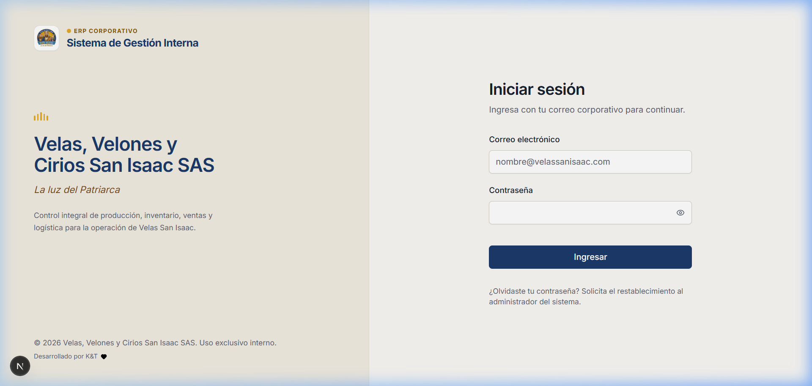
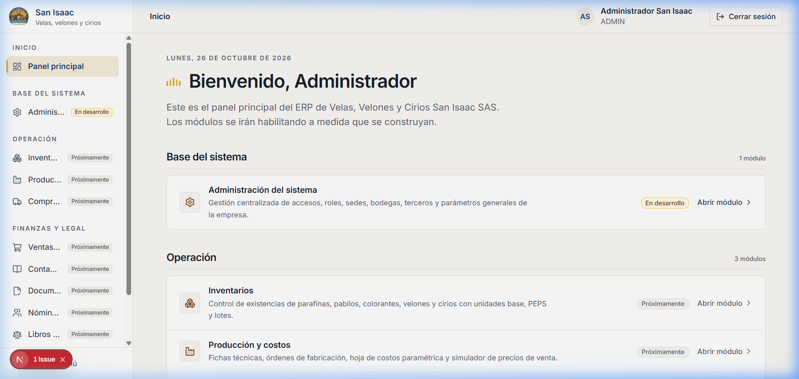
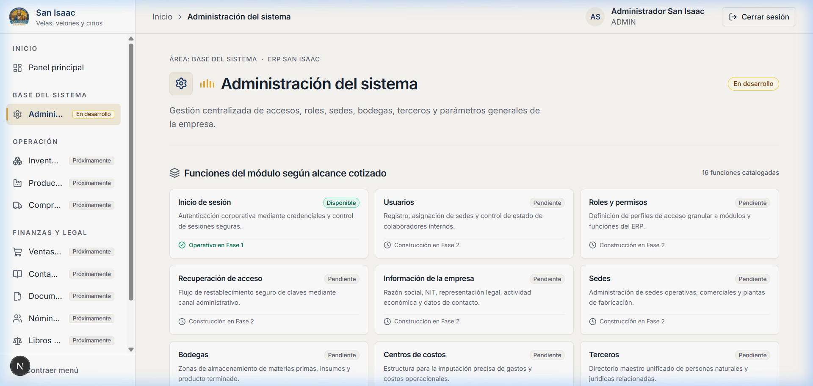
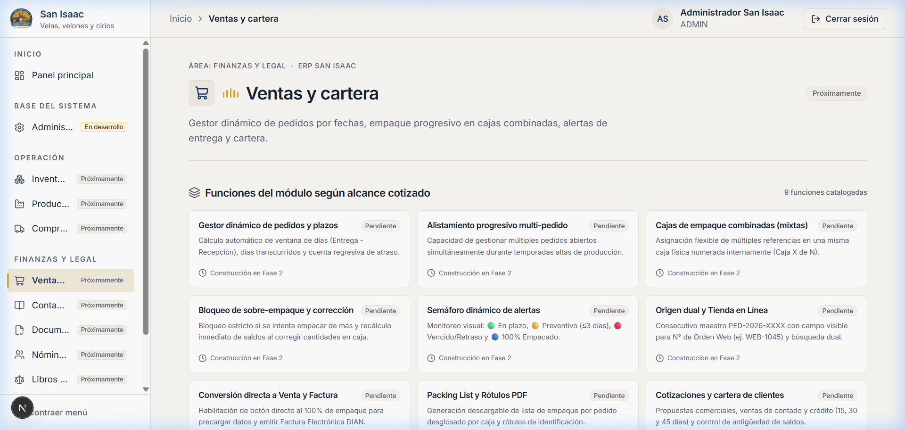
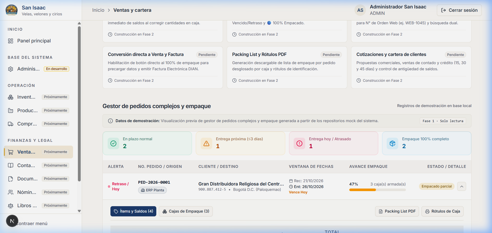

Análisis técnico, arquitectura del sistema, vista general de la plataforma y primer módulo funcional con el Requerimiento V2 como anexo maestro.
Estos son los componentes técnicos, vistas y especificaciones completadas en la Fase 1. En las páginas siguientes se documenta cada uno con capturas reales tomadas directamente de la plataforma en funcionamiento.
| # | Componente / Entregable | Módulo / Alcance |
|---|---|---|
| 1 | Inicio de sesión y autenticación segura con perfiles | Módulo 1: Administración (Funcional) |
| 2 | Vista general con el catálogo completo de 10 módulos | Panel Principal / Arquitectura |
| 3 | Directorio de colaboradores, sedes y centros de costos | Módulo 1: Administración del Sistema |
| 4 | Integración Anexo V2: Gestor de pedidos dinámico | Módulo de Ventas y Cartera |
| 5 | Semáforo de alertas operativas para temporada alta | Monitoreo de Planta (V2) |
| 6 | Caso real de fábrica: 4 productos y unidades base | Alistamiento y Empaque (V2) |
| 7 | Cajas de empaque mixtas y corrección de unidades | Logística y Auditoría (V2) |
| 8 | Hoja de costos paramétrica y simulador de precios | Producción y Costos (V1 Priorizado) |
| 9 | Arquitectura de base de datos Supabase con RLS | Infraestructura y Seguridad |
| 10 | Documento maestro formal de requerimientos y cierre | Gobernanza y Transición a Fase 2 |
La Fase 1 ("Análisis y estructura técnica") tenía como compromiso contractual cerrar con el documento de requerimientos integrando el Documento V2 como anexo maestro y dejar operativa la vista general de la plataforma con la funcionalidad completa en el primer módulo. Todos los criterios fueron satisfechos y verificados al 100%.
Primer módulo funcional entregado: control de acceso corporativo implementado con NextAuth v4, validación estricta de credenciales encriptadas con bcrypt, sesiones seguras JWT y asignación de roles de usuario.

Vista general de la plataforma: panel centralizado que expone los 10 módulos del sistema agrupados en 4 áreas estratégicas: Base del sistema, Operación, Finanzas y legal, y Análisis.

Funcionalidad completa en el primer módulo: gestión de colaboradores de fábrica y administración, asignación de sedes operativas, centros de costos, perfiles y estado de actividad.

Incorporación del requerimiento complementario V2 al módulo de ventas: cálculo dinámico de plazos por fechas (Entrega - Recepción), monitoreo de temporada alta y semáforo visual de alertas críticas.

WEB-1045) para búsqueda indexada dual.PED-2026-0001.Implementación interactiva del caso de fábrica del Documento V2: cálculo en unidades base, control estricto de saldo pendiente, y armado de Cajas de Empaque combinadas con registro de auditoría.

Integración de la Hoja de Costos Paramétrica priorizada (V1) y estructura de base de datos en PostgreSQL/Supabase con Row Level Security para garantizar escalabilidad y rendimiento.
Fórmula del Costo Unitario de Producción:
CostoTotal = Insumos(1 + %Merma) + MOD + CIF
Fórmula financiera de margen comercial:
PrecioVenta = CostoUnitario / (1 - MargenDeseado)
Se configuró el entorno de desarrollo y producción bajo estándares senior de ingeniería:
src/database/): Desacoplamiento total entre las pantallas visuales y la persistencia de datos, garantizando que el paso a base de datos de producción no requiera modificar la interfaz.Certificación formal de cumplimiento de los compromisos de la Fase 1 conforme a la propuesta comercial y habilitación del cronograma para la Fase 2: Administración Funcional.
| 1. Análisis y estructura técnica del sistema | Completado 100% |
| 2. Vista general de los 10 módulos en la plataforma | Completado 100% |
| 3. Funcionalidad operativa en el primer módulo (Login / Admin) | Completado 100% |
| 4. Cierre formal con documento de requerimientos y V2 como anexo | Completado 100% |
Se da inicio formal a la Fase 2: Administración Funcional, la cual contempla: